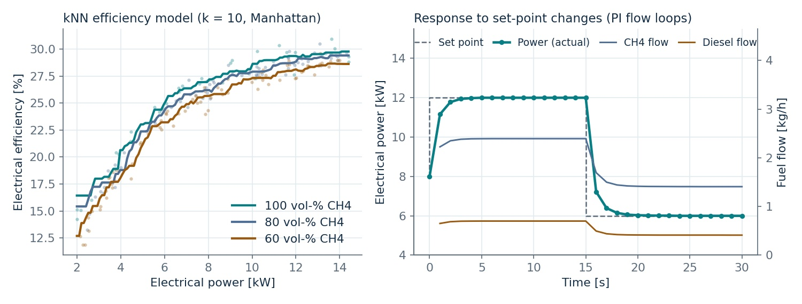

09/2026 – now
Independent project, RAG system
Geoberlin · Berlin
- Designing and building a retrieval-augmented generation system for a surveying engineering firm. Ongoing.
Engineer combining physics-based modelling, machine learning and energy systems
I build models that keep the physics and learn from the data, and I test them on small, expensive datasets from gas turbines, robots and engines. The aim is life, energy and efficiency predictions that stay physically plausible.
I size, balance and model energy and process systems: parked EV fleets as grid storage, a drinking-water plant, CHP and Power-to-Gas cases. In industry I planned production for an electric-motor line and modelled energy use on the shop floor.
Open to entry-level roles in ML, data science and hybrid modelling for the energy transition.
Open to entry-level roles in energy-systems and process engineering for the energy transition.
Project index · ML & modelling
ML & modelling
The projects with the strongest evidence for this view. Each card states the problem, my part, the result and its main limit; the case study underneath has the method and validation.
Gas turbines · fracture mechanics · hybrid ML
A neural network that predicts crack-growth curves for gas-turbine components with manufacturing defects, trained on experiments and held to the shape of an established fracture-mechanics model (IBESS) through its loss.

The physical short-crack model (IBESS) is interpretable but, on the experimental data, it systematically underestimated fatigue life. With only 56 specimens from one material at one nominal stress ratio (R = 0.1), a free black-box model would overfit and lose physical meaning.
Instead of free values at every point, the network outputs 16 decoder parameters per specimen: 7 density knots each for the depth and surface crack fronts, one terminal surface-to-depth ratio, and one cycle "warp" multiplier. Integrating and normalising the knots guarantees monotonically growing crack curves by construction.
Initial defect size (a₀, c₀), max/min stress, specimen width and thickness, defect type (surface or embedded, one-hot), plus derived aspect ratio, stress range, stress ratio (nominally 0.1 throughout, so it carries little information) and log-transformed size and load terms. All standardised. The physics curves are not network inputs: they supervise the curve shape through the loss, and the physics model's threshold cycle sets the time scale that the warp multiplier corrects.
Total loss = experimental error (MSE of log cycles) + four physics penalties: curve shape vs. IBESS, terminal crack-front ratio, concavity of the threshold curve (checked at 17 points), and a cap on the warp correction so timing cannot absorb all the error.

| Metric | Baseline | Thesis | Change |
|---|---|---|---|
| MAE (log) | 0.965 | 0.771 | −20.1% |
| RMSE (log) | 1.171 | 1.062 | −9.3% |
| Late predictions | 8 / 56 | 29 / 56 | +21 |
Errors are measured in natural-log cycle space, so the typical miss shrank from a factor of about 2.6 to about 2.2 in cycles. The error distribution moved from a consistent underestimate to centred on zero, and the median prediction ratio moved close to 1. The smaller RMSE gain shows that typical predictions improved more than the worst ones.
Digital twin · dual-fuel engine · ML services
A prototype twin of a 14.4 kWe dual-fuel (diesel and biogas) generator set: set power and fuel mix, and ML models plus physics formulas predict efficiency, exhaust temperature and fuel and CO₂ flows, served through an API into a 3D platform.

| Operating point at about 80% load | Twin vs. measured |
|---|---|
| Efficiency | within 0.1 pp |
| Exhaust temperature | within 1.5% |
| Methane flow | within 0.5% |
| Diesel flow | within 0.5% |
"Measured" is the nearest recorded lab operating point (raw lab data not published), which the models had seen in training, so this is a consistency check rather than independent validation. Fuel flows follow from the predicted efficiency through the energy balance. In simulation, the controller settles in under 5 seconds.

Hybrid modelling · industrial robots · energy efficiency
The physics-plus-data approach I later took further in my thesis, here on a universal robot in engine assembly: a physics-based model, a neural network that predicts its energy use, and trajectory studies to find where energy could be saved.
Small-data regression · model selection
Can you predict how a car will perform from nine design parameters, with data on only 31 cars? Four regression models compared on five functional attributes.

31 midsize sedans sold in the US in 2002, from a published platform study (de Weck, 2006). Nine design variables: fuel tank capacity, engine displacement, front track width, wheelbase, ground clearance, height, length, tyre width and tyre diameter. One car (Honda Accord) held back as a final check.
Mean imputation and standardisation, then sequential floating forward feature selection. Each model tuned and scored with 5-fold cross-validation, with linear regression as the literature baseline.
| Attribute | Linear | Lasso | kNN | SVR |
|---|---|---|---|---|
| Passenger volume | 0.58 | 0.59 | 0.75 | 0.78 |
| Cargo volume | 0.71 | 0.66 | 0.65 | 0.67 |
| Fuel efficiency | 0.22 | 0.16 | 0.42 | 0.15 |
| Acceleration | 0.42 | 0.35 | 0.31 | 0.38 |
| Towing capacity | −2.91 | −2.83 | 0.24 | −0.18 |
Highest per attribute highlighted. These scores are optimistic: tuning and scoring used the same folds. A later re-implementation of this protocol gives medians of 0.55–0.69 (see the 2026 re-evaluation below).
The thesis tuned and scored on the same folds, and badge-engineered twins such as the Ford Taurus and Mercury Sable could land on both sides of a split. I re-implemented that protocol (median R² 0.55–0.69 across models) and compared it with repeated nested cross-validation that keeps twins in the same fold, after dropping 11 placeholder towing values. The median R² falls to 0.15–0.27. With the best model, cargo volume stays partly predictable (R² about 0.5) and passenger volume less so (about 0.4), fuel efficiency and acceleration are weak, and towing capacity is not predictable from these variables. Code and results ↗
Water treatment · unit sizing · project finance
A full treatment plant for very hard, turbid reservoir water, from intake pipe to chlorination, sized unit by unit in Excel and costed with CAPEX, OPEX and IRR.

Karachi supplies about 650 MGD against 820–1,200 MGD of demand. Karachi water-quality data show hardness up to 2,000 mg/L CaCO₃ and turbidity up to 65 NTU, which the design takes as its basis, so the plant needs softening and strong particle removal, not just disinfection.
1.5 m intake pipe at 1.24 m/s (Re ≈ 1.4 × 10⁶, 0.10 bar loss over 0.5 km). Alum 70 mg/L, chlorine 5 mg/L, COD 60 mg/L, activated-carbon capacity 600 mg COD/g, 20 min empty-bed contact time, 1% water loss.
| Step | Purpose | Size |
|---|---|---|
| Storage | buffer raw water | 2 × 3,927 m³ |
| Dissolved-air flotation | remove flocs and turbidity | 12 × 160 m³ |
| Sand filtration | polish particles | 12 units |
| Lime softening | reduce hardness | lime 1,423 mg/L |
| Activated carbon | remove organics | 4 × 657 m³ (20 min contact) |
| Chlorination | disinfection | 4,800 m³ · 39.4 kg Cl₂/h |
CAPEX $90.0 M plus 5% contingency. In the team's cost breakdown, disinfection (35.5%) and activated carbon (34.2%) are the largest items. Cash-flow analysis gives an IRR of 8%, above the 6–7% hurdle rate.
Academic design estimates, not an operating plant. The team flagged public trust, high utility costs and governance as the main delivery risks.
CHP case analysis · heat demand · investment case
Should a London university campus run its own combined heat and power unit, and how big? A course presentation working through a published CHP assessment (Amber et al., 2018).

Existing boilers total 4,950 kW (3 × 1,500 + 450 kW). Annual use is about 4.2 GWh of heat and 3 GWh of electricity. Thermal base load is 400 kW in winter and 180 kW in summer; electrical base load is 275 kW.
A CHP only pays off when its heat is used, so the unit sits under the winter heat base load (400 kW) and the electrical base load (275 kW) to run long hours: 215 kW electrical and 304 kW thermal at about 5,000 h/yr. Part-load efficiency ranges from 29–32% electrical and 42–49% thermal. A second option runs 24/7 below the electrical base load to cover 47% of one building's power.
Useful heat demand and the electricity-to-gas price ratio decide the case. Higher power prices or cheaper gas shorten payback; across the tested prices it ranged from about 4.5 to 15 years.
Vehicle-to-grid · peak demand · scenarios
A scenario model of Berlin's battery-electric fleet from 2025 to 2030, estimating how much stored energy owners could feed back during the evening peak, by season and participation rate.
Evening peak plateaus per Berlin planning area (LOR) taken from Straub et al. (2023): 3.5 MW for 4 h in summer and 6 MW for 5 h in winter, scaled to all 448 areas. That gives 6,272 MWh (summer) and 13,440 MWh (winter) of energy in the peak window.
Available energy E = N · C · SOC · PR · α · η: fleet size N, 60 kWh battery, 30% of charge released, participation 25/50/75%, simultaneity 0.40 (summer) or 0.55 (winter), 88% discharge efficiency. Fleet grows about 55% a year from 34,000 BEVs in 2025.

In 2025 V2G covers only 0.6–2.6% of the peak. By 2030 fleet growth makes it a meaningful flexibility resource, but how many owners take part and when cars are plugged in matter as much as the number of cars.
One planning area's demand profile scaled to all 448 areas, vehicles spread evenly across the city, fixed simultaneity factors and ideal coordination with the grid. Battery wear, economics, charger roll-out, regulation and local grid limits are not modelled, and the growth and participation rates are optimistic.
Production planning · process data · predictive maintenance
A year in planning and industrialisation for a new axial-flux electric motor: engineering for the new production facilities and data-driven monitoring of a key machine.
Hydrogen · methanation · energy balance
Is Power-to-Gas a key technology for the energy transition? Energy and mass balances for both routes, a comparison of electrolyser and methanation technologies, and a real plant case.

| Type | Efficiency | Temperature | TRL | Stack life |
|---|---|---|---|---|
| Solid oxide (SOE) | 81–86% | 500–1000 °C | 6–7 | < 40,000 h |
| PEM | 67–82% | 50–90 °C | 8 | < 20,000 h |
| Alkaline (AEL) | 62–82% | 60–90 °C | 9 | < 90,000 h |
1 kWh of electricity and 189 g of water give 0.7 kWh (20 g) of hydrogen and 168 g of oxygen. Methanation with 110 g of CO₂ gives about 0.55 kWh (40 g) of methane and 0.115 kWh of heat, which is worth recovering.
6 MW plant producing about 1,300 m³/h of hydrogen and 350 m³/h of synthetic natural gas at 54 ± 3% efficiency, about 4,000 h a year. Electricity is about 70% of operating cost; the plant is not economic without subsidies.
Hydrogen keeps more of the energy; methanation trades about a fifth of it for compatibility with existing gas grids and storage. Either route is only climate-positive with renewable power and biogenic CO₂.
High production cost driven by electricity price and utilisation, and unclear legal classification of the gas. Reactor options range from fixed-bed (TRL 9) to three-phase reactors (TRL 5).
E-mobility · smart grids · Oct 2025 · individual
How e-buses differ from cars for the grid (250–600+ kWh packs vs. 50–120 kWh), which charging set-ups fit which routes, and where smart charging, microgrids and V2G create value. Review of 11 recent sources.
Battery storage · Jan 2023 · team of 4
What happens to EV batteries below 70–80% capacity: ageing, which chemistries suit reuse, and stationary-storage uses, from a 2.8 MWh Hamburg system built from 100 BMW EVs to a 10 MWh store at Rome airport.
Output: a six-phase roll-out roadmap and a value matrix for operators, utilities and cities. V2G with buses has to be weighed against battery wear and warranty limits.
Cycle life differs widely: LTO reaches 3,000–7,000 cycles, NMC and LFP about 2,000. Main barriers are safety, the variety of pack designs, conversion effort and economics. Recycled materials could cut raw-material cost by up to 30%.
Course projects, case analyses and literature reviews: smaller in scope than the selected work, set more compactly, with the same case-study detail underneath.
Education, industry experience, location, languages and skills. The project case studies are in the portfolio view.
09/2026 – now
Geoberlin · Berlin
02/2026 – 08/2026
Siemens Energy · Mülheim an der Ruhr
02/2024 – 08/2024
Mercedes-Benz AG · Berlin
02/2023 – 02/2024
Mercedes-Benz AG · Berlin
02/2022 – 02/2023
PSI Metals GmbH · Berlin
11/2022 – 08/2024
Company Consulting Team · Berlin
09/2012 – 09/2024
ISG Berlin · youth organisation, 600+ members
Publication
Rahn M, Göhlich D, Fay T-A, van Ho K (2025). Data-driven design: predicting functional attributes in early-stage automotive engineering. Proceedings of the Design Society, 5:1091–1099. doi.org/10.1017/pds.2025.10123
Python (pandas, NumPy, TensorFlow, scikit-learn, basic PyTorch) · physics-informed and hybrid models · neural networks · regression on small datasets · nested cross-validation · physical-consistency checks
FastAPI · Docker · Git · SQL / PL/SQL · MATLAB · Power BI · RAG and LLM applications · Claude Code
KnowledgeThermodynamics · renewable integration · energy storage and V2G · smart grids · Power-to-Gas · CHP and waste heat · water treatment · plant sizing
ToolsAspen · CycleTempo · Excel · Siemens Solid Edge · AutoCAD
Looking for an entry-level role in ML, data science or hybrid modelling for the energy transition.
Looking for an entry-level role in energy-systems or process engineering for the energy transition.